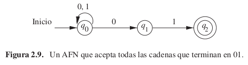
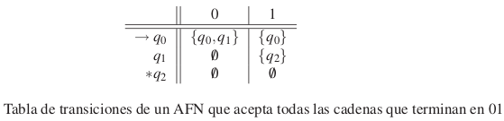
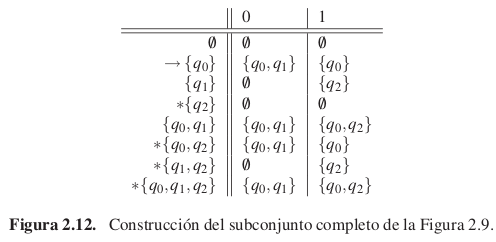
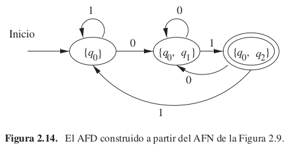
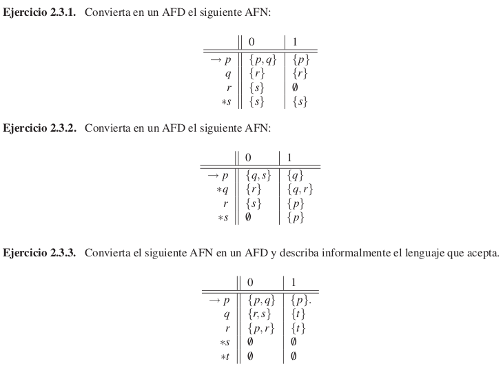

Un autómata finito “no determinista” (AFN) tiene la capacidad de estar en varios estados a la vez.
Puede “conjeturar” sobre su entrada.
Por ejemplo, cuando se buscan determinadas palabras dentro de una cadena de texto larga, resulta útil “conjeturar” que estamos al principio de una de estas palabras y utilizar una secuencia de estados únicamente para comprobar su aparición, carácter por carácter.
Un AFN es muy parecido a un AFD, de hecho su definición es casi igual.
La diferencia entre los AFD y los AFN se encuentra en el tipo de función de transición δ.
En los AFN, δ devuelve un conjunto de estados en lugar de devolver exactamente un estado.

01 final01 final, por eso los buclesEjemplo con entrada 00101.

Si A = (Q, Σ, δ, q0, F) es un AFN, entonces
L(A) = {w|δ(q0, w) ∩ F ≠ 0}
L(A) es el conjunto de cadenas w tal que δ(q0, w) contiene al menos un estado de aceptación.
Ya vimos que el conjunto de los lenguajes decidibles (por MTs) y de los lenguajes regulares (por AFDs) eran distintos (porque CAP es decidible pero no regular).
¿Qué pasa con el conjunto de lenguajes de los AFN? ¿Es distinto del conjunto de lenguajes regulares?
Si tenemos un AFN con estados Q, se puede construir un AFD que acepta el mismo lenguaje, con estados 2Q:
En el peor caso pasamos de n estados a 2n estados pero en la práctica es poco común.


